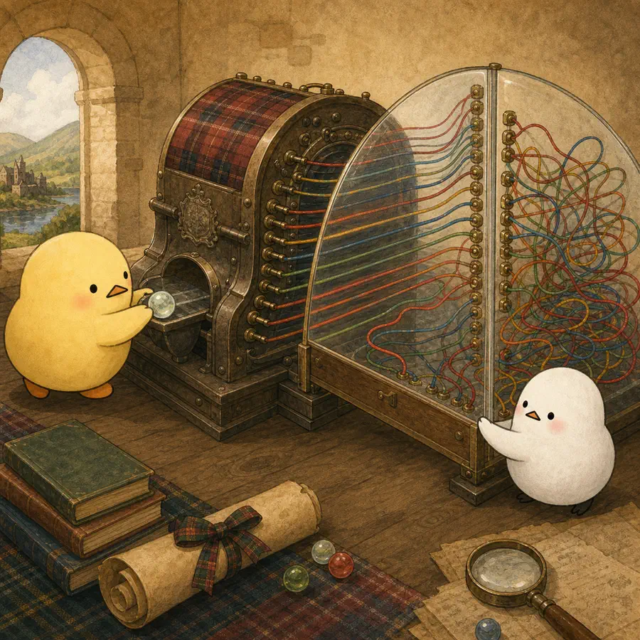
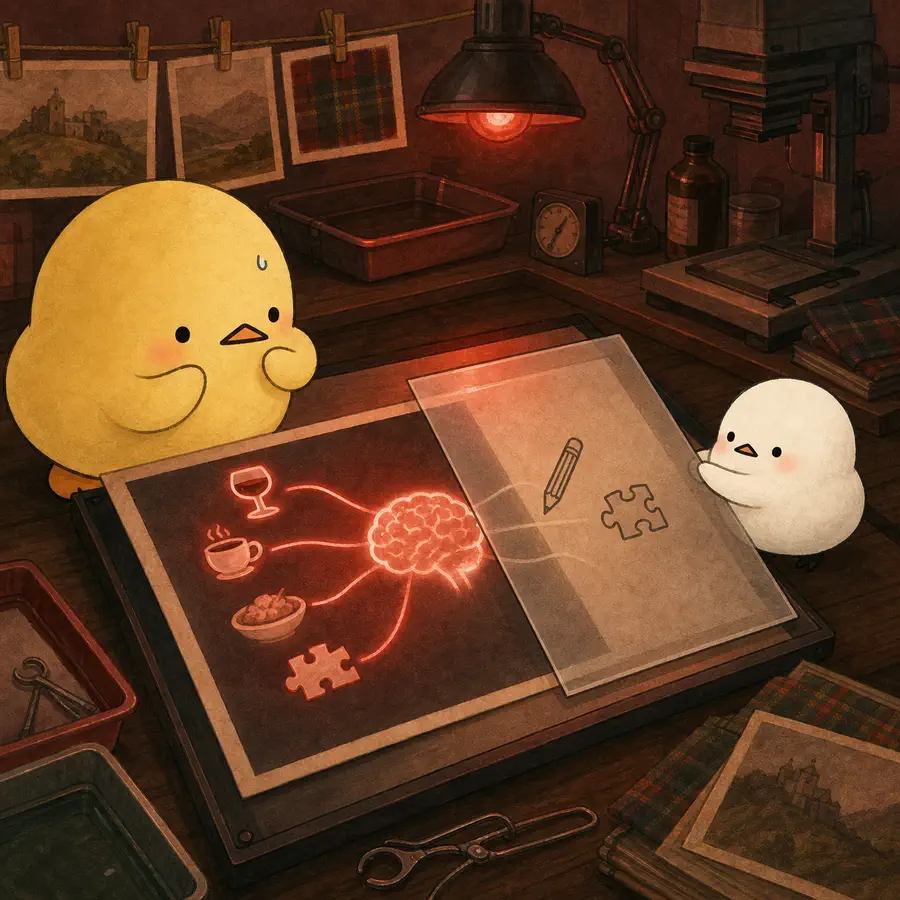
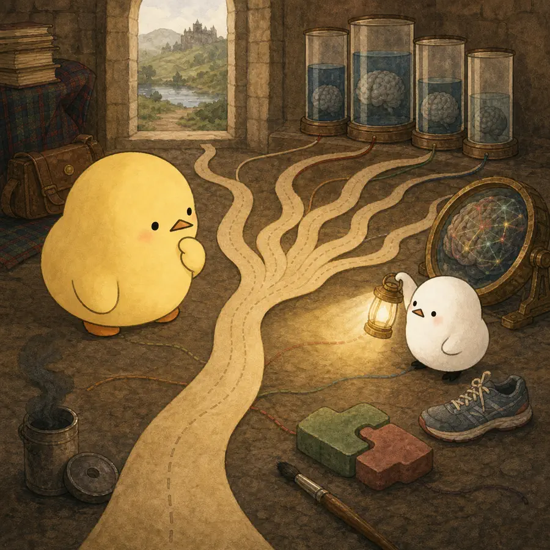

옆으로 넘겨 4컷 보기
-
로디언 연구는 11세의 전국 검사 기록을 노년기 재검사와 연결했다.
-

11세 지능은 77세 지능의 개인 간 분산 약 절반을 예측했지만 개인의 미래를 고정하지 않았다.
-

어린 시절 인지를 조정하면 일부 생활습관 상관은 선택과 교란으로 설명될 수 있다.
-

강한 초기 예측력과 별개로 남은 분산과 개인별 인지 변화는 여전히 연구할 대상이다.